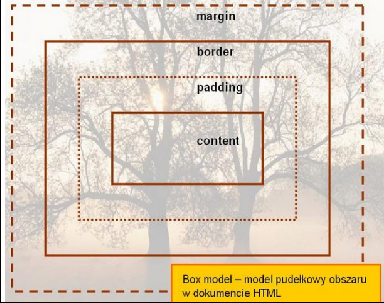
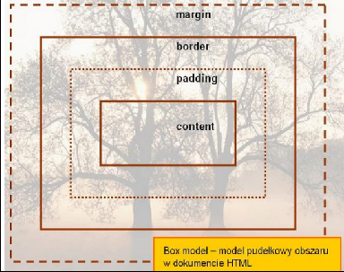
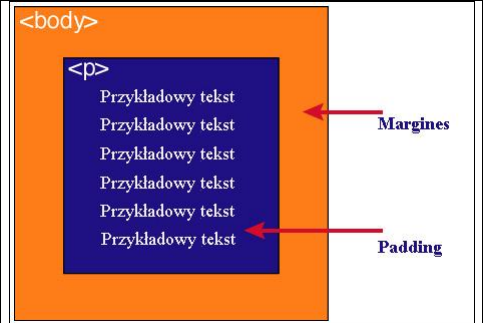

5. Podaj definicję modelu pudełkowego.
Każdy element w dokumencie HTML, otacza się prostokątnym obszarem zwanym pudełkiem (ang. Box model).
Pudełko składa się z kilku warstw: zawartość modelu pudełkowego:
Wykonaj oraz uzupełnij tabelę:
| content |
zawartość elementu (np.: tekst, obrazek) |
| padding |
otaczające marginesy wewnętrzne, odstęp między obramowaniem i zawartością elementu |
| border |
obramowania wokół zawartości elementu, ma styl i kolor. |
| margin |
marginesy wokół ramki (margines zewnętrzny). Jest to pusty obszar wokół ramki, który nie ma koloru tła i jest przeźroczysty. |
Uwagi:
1)Padding, border i margin mogą mieć zerową wartość.
2)Tło elementu jest określone dla wszystkich z podanych powyżej obszarów z wyjątkiem
marginesów zewnętrznych, które zawsze są przezroczyste (transparent).
 


Jak widać na rysunku, padding oznaczony jest kolorem niebieskim. Określa on wielkość
przestrzeni wokół elementu < p>. Element ten posiada również margines zaznaczony kolorem
pomarańczowym. Jest to odległość od brzegu elementu < body>.